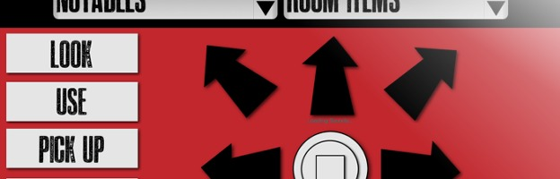

Mineshaft Mishap
Text Adventure Games, despite being graphics-free, paved the path for the image-heavy computer games of today. A game based only on written words seems quite minimal by most people's standards... but what if you remove the text from a Text Adventure altogether? You end up with a game told only through sound.
Mineshaft Mishap is a vast Audio Adventure for iPad/Anroid tablets. I'm working on it with a number of my classmates, and the first "Chapter" will hopefully be ready to launch in a year or so. The story spans numerous chapters and genres, and follows a group of children who find themselves in an abandoned theme park. The game is full of mystery, horror, and survival elements, and is meant to feel like an interactive audio book.
We decided to use jQuery instead of Flash to program the game's interactivity. PHP, AJAX/JSON, and MySQL are all very important components of the game engine we made. John Sagris was kind enough to provide his voice as the narrator (despite the story's absurd script length).